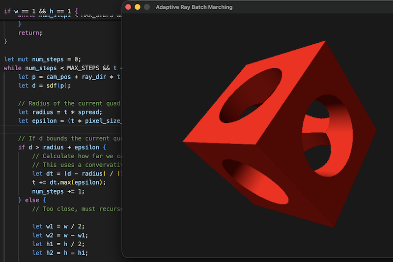

A Recursive Algorithm to Render Signed Distance Fields

Signed Distance Fields (SDFs), also known as implicit surfaces, are a mathematical way to define 3D objects. If polygons and rasterization are like imperative programming, then SDFs are (literally) the functional paradigm for graphics. In this paradigm, an object can be defined by a function that computes a signed distance to the surface of the object, where the distance is positive outside of the object, zero at its surface, and negative inside the object.
The beauty of SDFs is that, like functional programming operators, they can be easily combined. You can subtract one shape from another, you can morph and twist shapes, you can bend space. All kinds of things that would be very hard to do with polygons become trivially easy. In this paradigm, your 3D scene can be defined using code, and even a relatively short program can create something like an infinite procedural city. In a lot of ways, it feels like graphics technology from the future. I imagine that FORTRAN programmers probably felt this kind of awe the first time they saw Lisp code, too.
Inigo Quilez deserves a lot of credit for popularizing the technique and making it approachable to many. However, what initially led me to discover the technique is that it has become widely used in the demoscene. There is a demoscene crew called Mercury which produced several mindblowing 64-kilobyte demos, where the whole program, including music and textures fits inside of a self-contained 64KB executable, because everything is procedurally generated. These demos heavily leveraged SDFs to produce incredible graphics at the time.
The standard algorithm used to render SDFs is known as raymarching or sphere tracing. This algorithm has the nice property that it's very easy to understand and to implement. It's a lot simpler than rasterizing polygons. You don't have to deal with image plane projections and clipping, for instance. The downside is that this algorithm is computationally much more expensive than rasterization. This is because rendering a single pixel can require sampling your SDF multiple times. If your SDF is very complex, this can be especially painful. Raymarching is typically even more expensive than raytracing. However, as previously stated, SDFs have many very appealing properties, so it's tempting to try to find ways to render them faster.
Back in 2016, I wrote about the potential to use partial evaluation, a technique from the world of compilers, to optimize the rendering of SDFs. Using compiler techniques is appealing because SDFs render 3D scenes as code. Matt Keeter had commented at the time to share that interval arithmetic can be used to achieve this purpose. However, the downside is that to make this work, you have to implement a whole compiler for your SDFs. There are also potentially simpler techniques, such as using bounding volumes to determine which objects in the world can intersect with your view frustum and avoid evaluating an SDF corresponding to the entire scene. Still, even if you can constrain the number of objects being sampled, SDFs can still remain expensive to render.
Using SDFs to do real-time 3D graphics only became practical with the advent of modern GPUs. On a GPU, it's not so crazy to think of evaluating the same function several times per pixel. What if you wanted to render SDFs on CPU though? That might sound a bit silly, but CPU programming has the advantage that all of your codebase can be in the same programming language, and you don't have to deal with the awkwardness of shuffling data back and forth with GPU APIs, along with sometimes awkward programming constraints.
I had this idea a few days ago that it might be possible to use a recursive divide and conquer algorithm to render SDFs. It's possible to recursively divide the view frustum into smaller and smaller quads. The idea being that you start by tracing an initial ray corresponding to the entire view frustum, and you try to advance all rays at the same time. This is possible because you can calculate, given a ray centered in the middle of a quad, how far you can safely advance all rays in that quad. When you get too close to an object to be able to advance all rays, you can recursively subdivide your patch into 4, and try again with a smaller quad.
I wrote a proof of concept in Rust and put it on GitHub. My test program is rendering a very simple scene, but the results are very encouraging. With the recursive algorithm, it's possible to render this object with 3 to 4x fewer rays per pixel, and more than tripling the frame rate. The benefit may not be as much for more crowded scenes with less empty space or when rendering fractals. However, I think there's still a clear benefit given that a lot of the scenes people tend to render (e.g. games) do fit the pattern where there is a lot of empty space and world surfaces are relatively flat.
I also decided to extend my recursive algorithm further and implemented another one which builds on this and uses linear interpolation to shade entire patches of up to 10x10 pixels. The idea there is that when you get to an object, you can query ahead of your current position, and if you find that all four corners of the current quad are inside the object, then you can heuristically guess that you are not at the edge of an object. I compare the normals at every corner of the patch to check that they are relatively aligned to make sure that the patch did not hit a sharp corner. This is an approximation and it probably only makes sense for flat-shaded objects, but makes it possible to go down to fewer than one sample per pixel.
After playing with this, I was curious if anybody else had come up with the same algorithm. I had never heard of anything like it, and my Google searches revealed nothing, but I decided to share the idea on X and reach out to Inigo Quilez, the patron saint of SDFs. My initial thought was that recursive subdivision is not very GPU-friendly, but you might be able to achieve the same effect using multiple shader passes. For example, you raymarch cones in patches of 8x8 pixels in the first pass, and then you feed those starting distances to a second per-pixel rendering pass.
Unsurprisingly, it turns out that other people had already thought of applying the multi-pass technique on GPU, but the idea is not very widely known. The colloquial name is "cone marching", and it's described in a few places online, notably:
With the techniques described in this post, I'm able to render a simple SDF object at up to 50 FPS with the recursive algorithm, and 100 FPS with the interpolated shading technique on top. This is on a single CPU core of a MacBook Air M1. It might not seem that impressive given that my scene is very simple, but the code that I wrote is not heavily optimized and again this is using only one CPU core. The implication is that with better optimized code, and leveraging multiple CPU cores on a more modern CPU, we're approaching the territory where it would be possible to make a 3D game like a first person shooter that's rendered using SDFs on the CPU, no GPU required. At least if you're willing to tolerate a 720p resolution, though 1080p might also be possible if you're skilled at writing SIMD code. On GPU we're already firmly in the realm where building a game using SDFs for graphics is 100% achievable, and there are more and more known techniques to make rendering them more efficient.